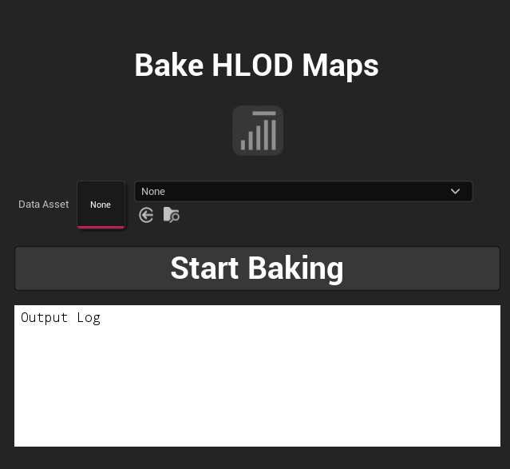

Sistema de Automação de HLOD em Lote para otimização massiva de cenários e ambientes. Batch HLOD Automation System for massive scenario and environment optimization.

Ferramenta de automação desenvolvida em C++ para Unreal Engine para automatizar a geração de HLODs (Hierarchical Level of Detail) em múltiplos níveis/mapas sequencialmente, eliminando processos manuais repetitivos e reduzindo drasticamente o tempo de otimização de ambientes. O fato de poder trabalhar utilizando DataAssets ajuda muito a manipulação de quais mapas queremos trabalhar; por exemplo, em larga escala podemos colocar o HLODAutoBaker para automaticamente processar alguns mapas, que podem ser facilmente modificados com um commit no Perforce. Automation tool developed in C++ for Unreal Engine to automate Hierarchical Level of Detail (HLOD) generation across multiple levels/maps sequentially, eliminating repetitive manual processes and drastically reducing environment optimization time. Leveraging DataAssets greatly simplifies map queue management; for instance, at large scale we can configure HLODAutoBaker to automatically process designated maps, which can be easily updated via a single Perforce commit.
Antes de iniciar o processamento, o sistema faz o checkout automático no controle de versão de todos os mapas da fila, evitando falhas de permissão ou salvamento durante o processo. Before processing, the system automatically checks out all queued maps from source control, preventing permission or saving errors during execution.
O código processa os níveis de forma assíncrona. Ele carrega um mapa da fila, aguarda a inicialização completa da Engine via timers do Editor, aplica a configuração global de HLOD no nível e inicia a compilação. The system processes levels asynchronously. It loads a map from the queue, waits for complete Engine initialization using Editor timers, applies global HLOD configurations, and triggers compilation.
Após compilar os HLODs de cada mapa, a ferramenta marca as alterações, salva os novos assets criados e força a limpeza de memória (Garbage Collection) para evitar travamentos ou consumo excessivo de RAM ao processar projetos grandes. After building HLODs for each map, the tool flags modifications, saves newly created assets, and forces Garbage Collection to prevent memory leaks or crashes when handling large projects.
Assim que toda a fila é concluída, o sistema redireciona e vincula automaticamente os proxies gerados aos seus respectivos níveis. Once the entire queue finishes, the system automatically redirects and binds generated proxies to their corresponding levels.
UBlueprintFunctionLibrary, permitindo a criação de interfaces de UI no Editor para a equipe de arte e level design.
Exposed as a UBlueprintFunctionLibrary, enabling custom Editor UIs for art and level design teams.